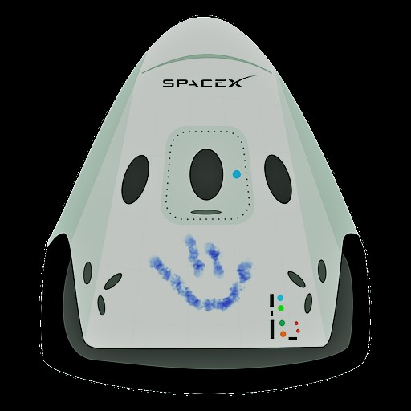

Hyperblog
Tu blog de cabecera
Este es el título atractivo e interesante del post
Y este es el párrafo de inicio donde vamos a verificar las cosas increíbles que se pueden hacer con git.

Los blogs son la mejor forma de compartir informacion y tus ideas. Mucho mas que salir en una conferencia o salir en Youtube. Excepto si eres un rockstar. Pero estadisticamente no lo eres.... por ahora.
Suscribete y dale like